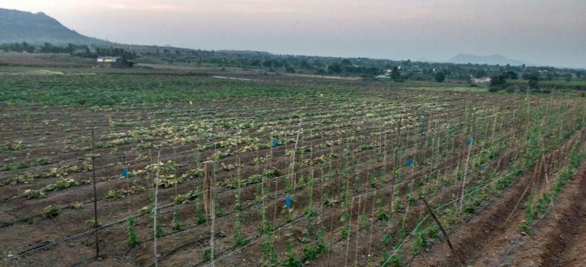
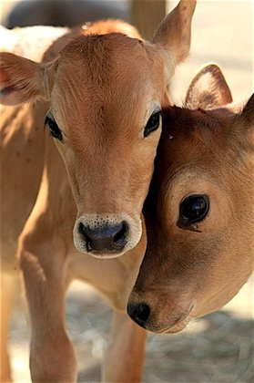

About Us
- 
- 
About Vishwas Farms
“Vishwas Farms” is an initiative to serve the nature and mankind through the most harmonious manner i.e. organic agriculture. The cultural practices are adopted in line with the process of sustainable agriculture systems.
The farm is certified under the SAS (Sustainable Agriculture System) organic agriculture process certification.
Vishwas Farms primarily deal with production, supply and sale of Organic Vegetables and Indigenous Cow milk also commonly known as A2-milk and its products.
Vishwas Farms are also in production of delicious Alphonso Mangos and Cashew Nuts grown in the our own valleys of Konkan.
“Vishwas Farms” is enterprise own by Vishwasrao family having farms at various locations near Pune and Ratnagiri.
Core Values
- Commitment
- Customer First
- Quality
Commitment towards Nature, towards Soil, towards health, towards genuineness in quality, towards customers belief. Commitment is our very first core value that defines us in this space and that should continue to drive us in this journey called life
Our Customer is our focus and we understand the importance of satisfied customer in long run. We also understand that practically it is impossible to satisfy everyone on the journey up to 100%, we are always determine to give our 100% towards it.
Quality defines the present and drives the future for any business. Utmost Quality is no second to us. Quality is the heart of the service we give and products we offer. Vishwas farms is committed to provide quality service with equally high standards of quality products.
Vision
To Make and sustained “ Vishwas Farms” a name of trust and dependable producer and service provider for day-to-day healthy diet requirement of mother’s womb to senior citizens.